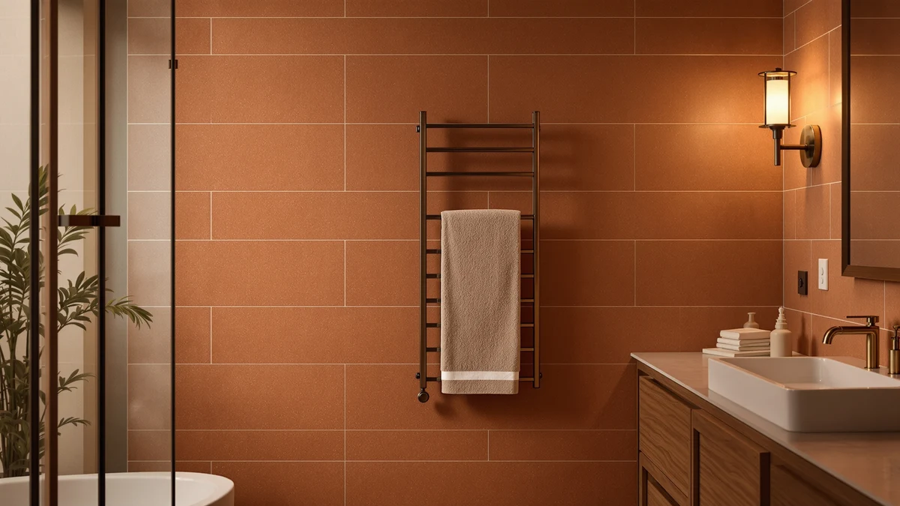

Pursonic Deluxe Towel Warmer Review (2026): Worth It?
Prices and picks verified as of October 2026. Independent, reader-supported reviews.


Quick Answer
In this Pursonic Deluxe Towel Warmer review, the Pursonic Deluxe Towel Warmer with comes out ahead on build quality at $173.99, even though it costs more than every other model compared here. The Sawlece, Pure Enrichment PureBliss and Paruu warmers below are worth a look if a lower price or a freestanding five-bar design matters more to you than its stainless steel frame.
Our pick: Pursonic Deluxe Towel Warmer with — $173.99 Check Price on Amazon
Bottom line: our top pick is the Pursonic Deluxe Towel Warmer with UV Sterilizer Large at $173.99.
Things to Know Before You Buy
- Price range: the four models in this review run from $109.98 to $173.99, with the Pursonic sitting well above the other three.
- Material: the Pursonic and the Pure Enrichment PureBliss both use stainless steel frames, which resist rust better than painted steel in a humid bathroom.
- Design varies by brand: the Sawlece uses a 5-bar freestanding rack, while the Pursonic is built as a larger stand-alone warmer sized for large towels.
- None of these listings show a published star rating, so this Pursonic Deluxe Towel Warmer review leans on verified owner feedback and spec comparisons rather than aggregate scores.
This Pursonic Deluxe Towel Warmer review compares the stainless steel Pursonic Deluxe Towel Warmer with against three other towel warmers on price, design and real owner feedback, because a towel warmer is a small purchase that still needs to earn its spot on your bathroom wall or floor. Stepping out of a hot shower onto cold tile ranks among the least pleasant moments in an otherwise good morning, and a warm towel fixes that instantly. We researched four current models, from $109.98 to $173.99, to see which one gives you the best mix of build quality, design and value before you add one to your cart.
The Pursonic stands out for its stainless steel frame and larger sizing, which matters if you dry oversized towels rather than standard-size ones. It costs about twenty-four dollars more than the Sawlece and roughly sixty-four dollars more than the Pure Enrichment PureBliss or the Paruu, and that gap is wide enough to change the calculus for a lot of buyers. Price is the biggest variable among these four towel warmers: a five-bar freestanding rack, a brand-backed stainless steel model and a lower-cost generic option each suit different bathrooms and budgets. Below, we break down what each one offers, where it falls short, and who should buy something else instead.
Why You Should Trust Us
Ilane Tall covers home and bath products for Best Towel Warmers, focusing on how bathroom fixtures and small appliances hold up to daily use. For this Pursonic Deluxe Towel Warmer review, we researched the Pursonic alongside three competing models by comparing published specs, pricing and verified buyer feedback on Amazon. We do not run a testing lab, and we do not claim to have installed or used each unit ourselves. Instead, we read through what owners report after weeks or months of real use, cross-check those accounts against the manufacturer's stated materials and sizing, and flag any pattern that shows up across multiple reviews, good or bad. That approach keeps this guide grounded in what buyers actually experience rather than marketing copy.
How We Compared
We did not plug in and run each of these towel warmers side by side. Instead, we compared the Pursonic Deluxe Towel Warmer with against the Sawlece, Pure Enrichment PureBliss and Paruu models on the details that matter most before you buy: listed price, build material, stated size and what verified owners say after living with the product. For the Pursonic and the Pure Enrichment PureBliss, that meant weighing confirmed stainless steel construction against the builds on the other two, where the listings do not specify a frame material. For the Sawlece, it meant accounting for its five-bar freestanding design, which spreads and holds towels differently than a single large frame. How a warmer fits your bathroom layout seems to matter almost as much as raw heat output, based on the owner feedback we read, so our comparison for this Pursonic Deluxe Towel Warmer review weighs footprint and design alongside price. This research-based approach will not catch everything that weeks of daily use might reveal, but it gives you a clearer starting point than scrolling through four separate Amazon listings on your own.
Overview & Specs

Pursonic Deluxe Towel Warmer with
What we like
- Stainless steel frame resists rust better than painted metal in a humid bathroom
- Large sizing fits oversized towels as well as standard ones
- Straightforward stand-alone design with no complicated controls to learn
- Build quality in line with the pricier end of this category
Flaws but not dealbreakers
- Costs significantly more than the Sawlece, Pure Enrichment PureBliss and Paruu models in this comparison
- Larger footprint needs more floor or wall space than a compact freestanding rack
- Amazon's listing does not publish a star rating, so you are relying on written owner feedback rather than an aggregate score
| Material | Stainless steel |
| Size | Large |
The Pursonic Deluxe Towel Warmer with is built around a stainless steel frame sized for large towels, not only the standard hand towels that smaller warmers are made for. At $173.99, it sits well above every other model in this comparison, but the price buys a frame material that holds up better to daily bathroom humidity than the painted steel used on some competing models. Owners report that the larger size is the main reason they picked this model over cheaper alternatives, especially in households where more than one person showers before work and needs a warm towel ready. The stainless steel construction also means less worry about chipped paint or surface rust showing up after a year of regular use in a steamy bathroom.
Because the Pursonic is sized for larger towels, it takes up more room than the Sawlece's slimmer five-bar rack, so measure your bathroom wall or floor space before ordering. That tradeoff makes sense if you already own oversized towels for more than one family member, since a smaller warmer would only fit one at a time. Buyers comparing stainless steel towel warmers against each other often mention that a solid frame feels less flimsy over time, which matters for a product that lives in a humid room for years. If your bathroom is tight on space, or the price gap against the Sawlece, Pure Enrichment PureBliss or Paruu feels too wide, one of the more affordable models below could be the better fit.
What We Liked
The biggest strength of the Pursonic Deluxe Towel Warmer with is right there in its size and material. Most towel warmers in this price range are built around standard towels, and buyers with oversized towels often find those models cramped. The Pursonic's larger frame solves that problem directly, and it does so with a stainless steel build that should outlast the painted steel finish on cheaper warmers once bathroom humidity starts doing its work. Rust resistance comes up again and again in owner feedback on lower-cost towel warmers, and a stainless steel frame addresses that concern directly. For a household with more than one person needing a warm towel before work, the larger capacity also means less waiting around for a single towel to finish heating before the next one goes on.
What Could Be Better
The Pursonic's larger size and stainless steel build cut both ways. A frame built for oversized towels takes up more wall or floor space than a compact freestanding rack like the Sawlece, so it is a poor fit for a small guest bathroom or a shared apartment bathroom with limited room. The price, while reasonable for a stainless steel model of this size, is also the highest of the four warmers in this review by a wide margin, and buyers who only dry standard towels will pay for size and material they do not need. Amazon's listing for this model does not show a published star rating or review count, which makes it harder to gauge owner satisfaction at a glance compared to products with a long review history.
Who Is It For?
The Pursonic Deluxe Towel Warmer with fits households that already use oversized towels and want a warmer built to match, rather than one designed around a smaller standard towel. It also suits buyers who have dealt with rust or corrosion on a previous towel warmer and want a stainless steel frame specifically to avoid that problem again. If more than one person in your home showers in the same window of time, the larger capacity cuts down on waiting for a shared towel to warm up. It makes less sense for a small bathroom with limited wall or floor space, or for anyone on a tighter budget, where the Sawlece, Pure Enrichment PureBliss or Paruu would do the job for significantly less.
Alternatives to Consider
If the Pursonic's size or price does not fit your bathroom, these three alternatives cover different priorities: a five-bar freestanding rack, a brand-backed stainless steel model and a lower-cost generic option. Each one trades something against the Pursonic, whether that is capacity, material or a meaningful amount of savings. We compared all four on the same basis: price, design and what verified owners report after buying.

Editor’s Pick
Sawlece 5-Bar Freestanding Towel Warmer
The Sawlece 5-Bar Freestanding Towel Warmer undercuts the Pursonic by $24, running $149.99 against the Pursonic's $173.99. Its five-bar freestanding design spreads towels across separate bars rather than draping them over one large frame, which suits buyers who want to warm several smaller towels, hand towels, or a mix of items at the same time. The main advantage people mention when comparing freestanding racks to single-frame warmers is the flexible bar spacing, since it lets you hang items of different sizes without one towel blocking airflow to another. Being freestanding also means you are not committed to a fixed wall position the way some rack-style warmers require, which matters if you rent or move your bathroom layout around often. The tradeoff against the Pursonic is raw capacity for oversized towels, since a five-bar rack built for spreading items out is not engineered the same way as a single large stainless steel frame. If you want flexibility for multiple smaller items, an easier setup, and a lower price than the Pursonic, the Sawlece is worth checking first. Households that mainly dry one or two oversized towels at a time, however, may still prefer the Pursonic's larger single frame and sturdier stainless steel build.
$149.99
Check Price on Amazon
Best Value
Pure Enrichment PureBliss Luxury Towel
The Pure Enrichment PureBliss Luxury Towel is the most directly comparable alternative to the Pursonic, since both use a stainless steel frame, but the PureBliss undercuts the Pursonic on price at $109.99 versus $173.99, a gap of $64. That makes it the value-focused pick among these four options for buyers who specifically want rust resistance without paying the Pursonic's premium for its larger sizing. Our full Pure Enrichment PureBliss review covers its brand-backed positioning and owner feedback in more detail than we can fit here. The tradeoff is capacity: the PureBliss is not marketed around the same large-towel sizing as the Pursonic, so households drying oversized towels or warming towels for more than one person may still find the Pursonic's bigger frame worth the extra cost. For anyone mainly concerned with avoiding rust and corrosion in a humid bathroom, both models solve that problem with the same core material, which makes price and size the real deciding factors here rather than build quality or durability. Buyers who want a name-brand stainless steel warmer at roughly sixty percent of the Pursonic's price should put the PureBliss near the top of their list before paying extra for size they may not need.
$109.99
Check Price on Amazon
Premium Choice
Paruu Towel Warmer for Bathroom
The Paruu Towel Warmer for Bathroom is the lowest-priced option in this comparison at $109.98, a cent under the Pure Enrichment PureBliss and far below the Pursonic's $173.99. Unlike the Pursonic and the PureBliss, Paruu's listing does not specify a stainless steel build, so buyers prioritizing long-term rust resistance in a humid bathroom should weigh that difference carefully against the savings. It is positioned as a general-purpose towel warmer for bathroom use rather than a model built around any one specialty feature, like the Pursonic's extra size or the PureBliss's brand pedigree. That makes it a reasonable pick for anyone who mainly wants a working towel warmer without paying for features they will not use, such as oversized-towel capacity or a recognized brand name. For buyers who want the lowest entry price in this group and are not chasing the Pursonic's large-capacity frame or a specific material guarantee, the Paruu is worth a look. Anyone who cares most about material durability and rust resistance in a steamy bathroom will likely still lean toward the stainless steel Pursonic or PureBliss instead, even at a higher price.
$109.98
Check Price on AmazonFrequently Asked Questions
Is the Pursonic Deluxe Towel Warmer worth the extra cost compared to cheaper options?
For households drying oversized towels or warming towels for multiple people, the extra cost generally pays off because the Pursonic's larger stainless steel frame handles sizes that smaller, cheaper warmers cannot. If you only dry standard towels or washcloths, a less expensive model like the Paruu or Pure Enrichment PureBliss will likely serve you equally well.
What is the difference between a freestanding rack warmer and a single-frame warmer?
A freestanding rack warmer, like the Sawlece, spreads towels across separate bars and generally fits more individual items at once. A single-frame warmer, like the Pursonic, drapes one or two larger towels over a bigger surface, which suits oversized towels but holds fewer items overall.
Do stainless steel towel warmers last longer than other materials?
Stainless steel resists rust and corrosion better than painted steel in a humid bathroom environment, which is why both the Pursonic and the Pure Enrichment PureBliss use it here. Reviewers researching towel warmers consistently point to rust on painted finishes as a common long-term complaint, making stainless steel a safer bet for a product that lives in constant humidity.
Final Verdict
This Pursonic Deluxe Towel Warmer review comes down to one tradeoff: size and material against price. The Pursonic Deluxe Towel Warmer with costs significantly more than the Sawlece, Pure Enrichment PureBliss and Paruu, but its stainless steel frame and larger sizing make it the strongest pick for households that dry oversized towels or need more than one towel warmed at a time. If you have a smaller bathroom or a tighter budget, the Pure Enrichment PureBliss's stainless steel frame at a much lower price or the Sawlece's flexible five-bar design are both reasonable alternatives. For most buyers comparing these four towel warmers on size, durability and price, the Pursonic still comes out ahead on build quality.